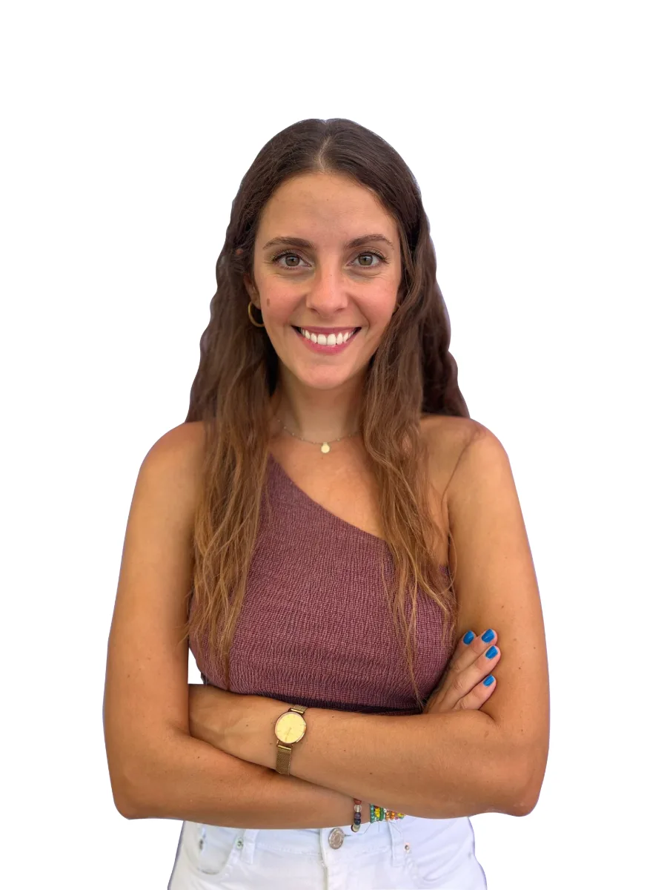
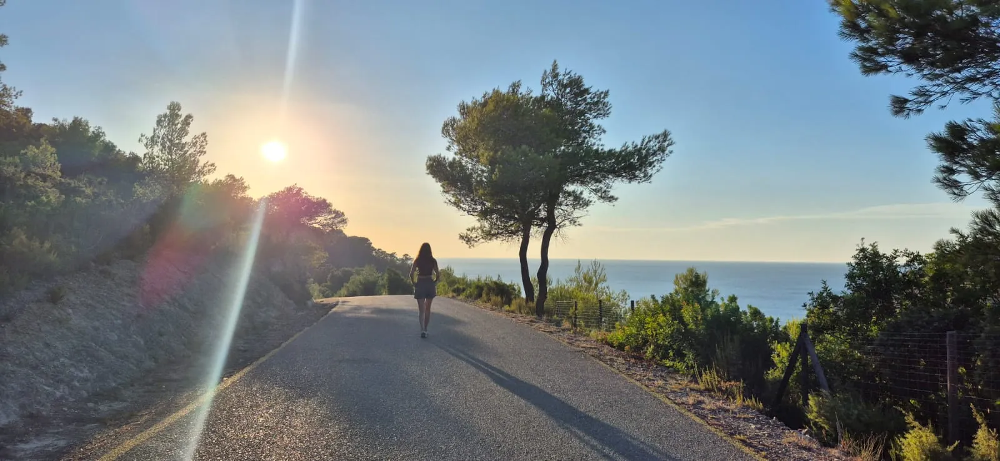

Tallers per a famílies
Espais per comprendre millor la infància i l'adolescència, compartir inquietuds i descobrir noves maneres d'acompanyar els fills i filles.
Descobreix els tallers per a famíliesPromovent el benestar emocional a través de la psicologia i l'educació.
Tallers i formacions per a famílies, adolescents i centres educatius.
Espais per comprendre millor la infància i l'adolescència, compartir inquietuds i descobrir noves maneres d'acompanyar els fills i filles.
Descobreix els tallers per a famíliesPropostes per treballar el benestar emocional, les relacions i la convivència amb infants i adolescents, a través d'activitats participatives adaptades a cada etapa.
Tallers per a centres educatiusAccions formatives i de prevenció que connecten la psicologia amb les necessitats de famílies, professionals i comunitats.
Parlem del teu projecte
Soc la Griselda, psicòloga infantil i juvenil, docent i formadora. Treballo per promoure el benestar emocional d'infants, adolescents i famílies, combinant la psicologia amb una mirada educativa, preventiva i propera.
Dissenyo i imparteixo tallers i formacions sobre adolescència, habilitats parentals, ús de pantalles, addiccions, neurodiversitat, sexualitat i gestió de conflictes.
Crec que comprendre què ens passa ens ajuda a relacionar-nos millor amb nosaltres mateixos i amb els altres. Per això, els meus tallers parteixen del diàleg, la reflexió i la participació.

Entenc l'educació com una de les eines més potents per promoure el benestar emocional.
Quan comprenem el que ens passa, podem relacionar-nos amb més calma, confiança i benestar.
Per això, els meus projectes parteixen sempre d'una mirada preventiva, propera i participativa.
No busco donar eines. Busco generar espais que ajudin les persones a trobar els seus propis recursos.
Parlem-nePropostes per a famílies i per a alumnat de primària i secundària, a més dels projectes de prevenció en què col·laboro. Aquí en tens un resum: a cada fitxa hi trobaràs els continguts, la durada i la modalitat.

Un espai per entendre millor què viuen els fills i filles a l'adolescència i acompanyar-los amb més calma.

Programa de dues sessions (Entendre i Acompanyar) amb pautes per comunicar-se amb més proximitat i posar límits amb respecte.

Amb Sergi Garcia i Ariadna Busqué. Estratègies per obrir converses honestes sobre addiccions amb fills i filles adolescents.

Un espai per explorar què passa "per dins" durant l'adolescència.

Amb Steph Watson. Un taller col·laboratiu per aprendre a mirar-nos i mirar els altres amb més consciència.

Claus per entendre i acompanyar la neurodiversitat a l'aula.

Eines pràctiques per gestionar i resoldre conflictes de manera constructiva.

Un taller sobre com gestionar la pressió social entorn del primer mòbil.

Un espai de diàleg familiar sobre l'ús de les pantalles a casa.

Una mirada positiva i propera a l'adolescència, per a mares i pares.

Eines pràctiques per passar del diàleg familiar a l'acció concreta.
No hi ha dues famílies, dos grups ni dos centres iguals. Per això, entenc els tallers com espais flexibles que parteixen de les preguntes i necessitats de les persones participants.
Combino coneixements de psicologia i educació amb dinàmiques, reflexions i propostes pràctiques per facilitar l'aprenentatge i obrir noves perspectives.
Cada proposta parteix de les preguntes, les inquietuds i el context de les persones participants.
Les idees es posen en comú i es contrasten amb altres mirades, en un espai sense judicis.
Dinàmiques i propostes pràctiques perquè l'aprenentatge es visqui, no només s'escolti.
El que es treballa a la sessió es connecta amb les situacions quotidianes de casa, l'aula o el grup.
Cada proposta s'adapta a la realitat de qui la demana: el grup, l'edat, el context i els objectius. Treballo amb centres, famílies, institucions i equips que volen cuidar el benestar emocional de les persones.
Parlem del teu projecteTallers i formacions adaptades a les necessitats de cada centre.
Tallers per a centresEspais de reflexió i aprenentatge per acompanyar la criança i l'adolescència.
Xerrades per a AFAsProgrames i accions preventives adaptades a la realitat de cada municipi.
Tallers i formacions per promoure el benestar emocional de les persones i les comunitats.
Acompanyament i formació per afavorir la comunicació, la inclusió i el benestar dins dels equips.
Si vols organitzar un taller o una formació per al teu centre, AFA, entitat o ajuntament, o simplement vols fer-me arribar una consulta, escriu-me i et respondré el més aviat possible.